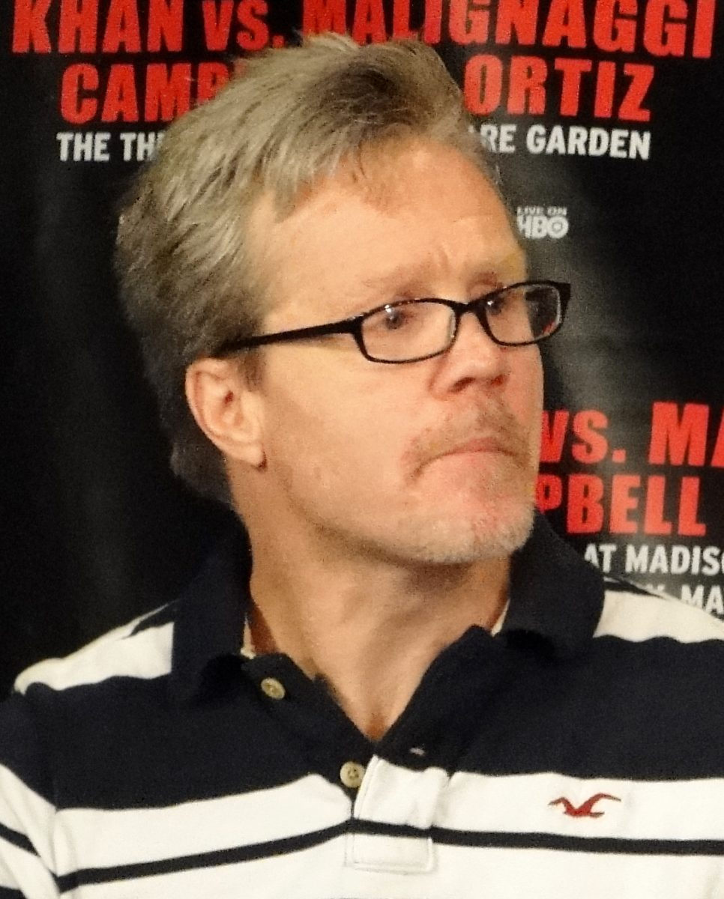

曼尼·帕奎奥：征服八个级别的街头拳王传奇
从露宿马尼拉街头的瘦弱少年到跨越四个十年的拳坛神话，这位菲律宾国宝级拳王铸就了无可复制的丰碑。

在成为拳击史上独一无二的“八级别世界拳王”之前，年仅14岁的曼尼·帕奎奥（Manny Pacquiao）曾站在马尼拉灰尘漫天的工地上。当时体重不足100磅的他，手中攥着仅有的几枚硬币，常常陷入两难：究竟是买一顿果腹的饭菜，还是把钱寄回位于桑托斯将军城的母亲手中？
正是这种残酷的生活磨砺，淬炼出了世界体坛最波澜壮阔的生涯之一。在长达30年、共计73场职业比赛的漫长征程中，帕奎奥交出了62胜8负2平的惊人战绩，夺得12条主要世界拳王金腰带，更成为史上唯一一位横跨四个不同年代均斩获世界头衔的拳击手。
桑托斯将军城的泥地拳台

1978年12月17日，帕奎奥（全名埃马努埃尔·达皮德兰·帕奎奥）出生于布基农省的基巴韦，随后举家迁往南哥打巴托省的桑托斯将军城。他是罗萨里奥·帕奎奥和迪奥尼西亚·达皮德兰所生的六个孩子中的老四。小学六年级时，父母离异，整个家庭瞬间陷入赤贫。帕奎奥在萨维德拉·萨瓦伊小学完成了初等教育，但严酷的生计问题迫使他提早告别了正规学堂。
命运的齿轮在1990年2月悄然转动。11岁的帕奎奥在电视机前目睹了一场世纪冷门：赔率高达1赔42的“毁灭者”詹姆斯·道格拉斯（James "Buster" Douglas）在东京巨蛋击倒了无可匹敌的重量级霸主迈克·泰森。他的舅舅萨尔多·梅希亚（Sardo Mejia）敏锐察觉到了外甥对拳击的狂热，于是在后院亲手搭建了一处简陋的训练场。短短六个月后，帕奎奥就登上了桑托斯将军城公园里的业余擂台，靠着微薄的出场费换取一袋袋救命的大米。
到了15岁，他已在棉兰老岛打出名气，交出60胜4负的业余战绩，成为当地最顶尖的青少年选手。为了寻求更广阔的舞台并赚钱养家，他作为偷渡客登上了开往马尼拉的货船。在首都，他白天在工地上打零工，夜晚蜷缩在拳馆地板上过夜。1995年1月，年仅16岁、体重仅106磅的帕奎奥出战次蝇量级职业拳赛，正式开启了职业生涯。
席卷八个级别的风暴

1998年12月4日，距离20岁生日还差两周的帕奎奥客场远征泰国，强势KO查猜·萨萨库尔（Chatchai Sasakul），斩获WBC蝇量级世界拳王头衔，初尝世界冠军滋味。然而，真正令其战力升华的转折点发生在2001年——他远赴重洋来到好莱坞的野牌拳馆（Wild Card Gym），与传奇教头弗雷迪·罗奇（Freddie Roach）相遇。
2001年6月，在仅有两周备战通知的情况下，帕奎奥在拉斯维加斯终结了IBF超最轻量级拳王莱罗霍诺洛·莱德瓦巴（Lehlohonolo Ledwaba），一战名动赌城。在接下来的十年里，他那狂风骤雨般的出拳速度与鬼魅的左撇子切入角度，接连击垮了整整一代未来的名人堂巨星。2003年，他重创马可·安东尼奥·巴雷拉（Marco Antonio Barrera）；随后与埃里克·莫拉莱斯（Érik Morales）联手奉献了名垂青史的三部曲；并与宿敌胡安·曼努埃尔·马奎兹（Juan Manuel Márquez）展开了四场惊心动魄的史诗对决。
在体重不断攀升的同时，帕奎奥不仅没有丧失杀伤速度，反而在力量上完成了进化，彻底打破了拳坛连跨量级必遭反噬的铁律。2008年12月，他跳升两个级别痛击拳坛超级巨星奥斯卡·德·拉·霍亚（Oscar De La Hoya），第八回合打得后者不得不弃权认输。五个月后的2009年5月，他又在米高梅大酒店的拳台上两回合将里奇·哈顿（Ricky Hatton）彻底击晕，摘下《拳台》杂志轻沉量级金腰带。
2010年11月，在经过12回合无情的重击惩罚安东尼奥·马加里托（Antonio Margarito）夺得WBC超次中量级金腰带后，帕奎奥正式达成了横跨八个不同级别的无双神迹，这在拳击编年史上至今无人企及。他斩获了四个量级的正统拳王头衔（蝇量级、羽量级、超羽量级和轻沉量级），并包揽了拳击原始八大核心级别中的四个冠军头衔。
惊人的长青状态更成为了他的金字招牌。2019年7月，已年满40岁零7个月的帕奎奥在拉斯维加斯打破了基斯·瑟曼（Keith Thurman）的不败金身，夺得WBA次中量级世界拳王，成为拳击史上年纪最大的次中量级冠军。
围绳之外的多元人生
走下拳台，帕奎奥成功将巨大的国民声望转化为商业版图与参政资本。在进入政坛之前，他于2007年2月通过考试拿到了高中同等学力文凭。2010年，他在萨兰加尼省当选为菲律宾国会众议员并成功连任两届；2016年，他更进一步，通过全国普选跻身菲律宾参议院。
在紧张的立法会议与世界冠军卫冕战集训的间隙，他还于2014至2017年间代表起亚队征战菲律宾篮球联赛（PBA），兼任球员与教练，此后还创立了半职业的“菲律宾马哈利卡篮球联赛”。在音乐领域，他翻唱的单曲《Sometimes When We Touch》曾杀入美国公告牌成人抒情榜第19位。
2021年9月，帕奎奥正式宣布退役并投身菲律宾总统竞选，最终在2022年5月的大选中位列第三，小费迪南德·马科斯赢得大选。在2025年中期选举周期淡出竞选舞台后，马科斯总统于2026年任命帕奎奥出任国家反贫困委员会负责人——这位曾经在街头苦苦挣扎的底层少年，终于完成了一个完整的命运轮回，站到了消除贫困的国家第一线，而正是当年那种刻骨铭心的贫穷，最初将他推上了拳击擂台。